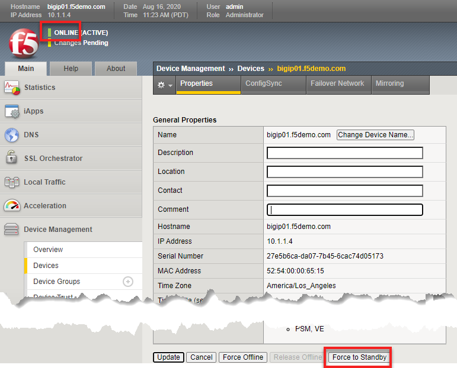
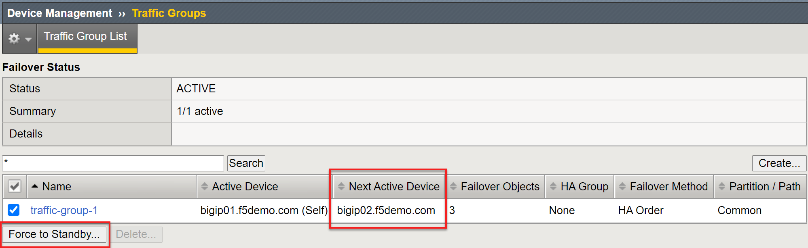
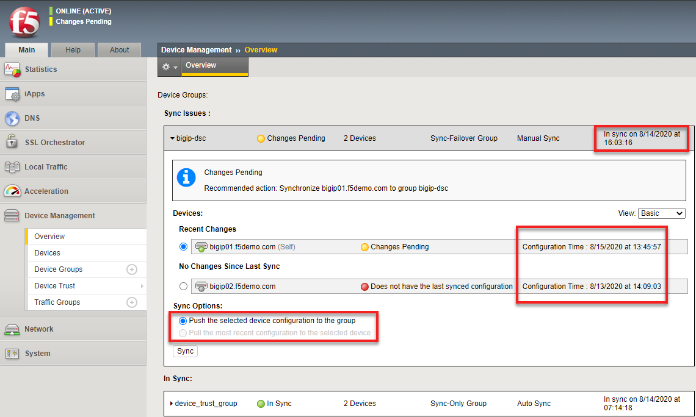
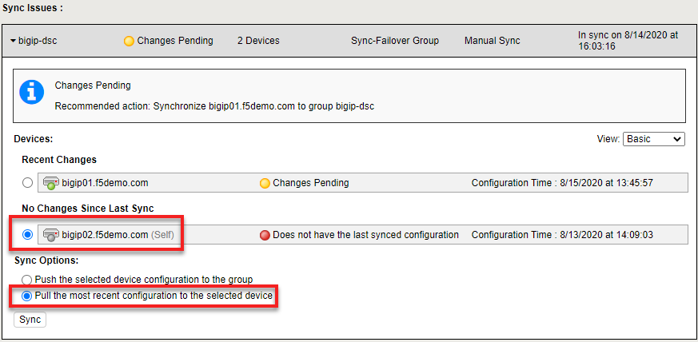

Unofficial - F5 Certification Exam Prep Material > F5 201 - TMOS Administration Labs 08/11/2020 > Lab 3 – Administering the System Configuration Source | Edit on
Maintaining the Device Service Cluster (DSC)¶
In this section we will review the things you may encounter while administering a Device Service Cluster (DSC) when administering high availabilty on the BIG-IP.
Let’s first take a look the status of our HA pair. You can find the status at anytime in the upper left corner of the TMUI interface next to the big red F5 ball. Here you will see the current redundancy state, whether the BIG-IP is an ACTIVE state (processing application traffic) or a STANDBY (no configurations items are processing traffic) and the current configsync status. Our BIG-IP is a standard Active-Standby pair, the most common HA configuration.
Open the TMUI interfaces for bigip01 and bigip02 and observe the state of the DSC.
Warning
You should always check the redundancy state before making any configuration changes on the BIG-IP. By default any BIG-IP can be the active device. For purposes of the lab environment the failover configuration has been modified to make bigip01 the active device whenever it is up and enabled.
Your current state and status on bigip01 should be ACTIVE with Changes Pending since you have been modifying the configuration throughout the labs.
Your current state and status on bigip02 should be STANDBY with Changes Pending since you have been modifying the configuration throughout the labs.
On bigip01 go to Device Management >> Device and click on the bigip01.f5demo.com (Self) link.
This will give you access to HA settings, such as, IP configsync listens for updates on, etc. Also from here your can force the BIG-IP to failover by selecting Force to Standby or Force Offline.
On bigip01 go to Device Management >> Traffic Groups on each BIG-IP. There you will find a list of the configured traffic groups and what the next active device is. Here you can force a particular traffic group to failover. Clicking on a traffic group gives you more detail and configuration options.
On bigip01 click on Changes Pending or go to Device Management >> Overview. Here you can see the last time the DSC was in sync. You can see the configuration time for each device in the cluster. Here you have the option to push or pull the configuration.
Note
The red status of bigip02 is do to the nature of the lab environment and the DSC being brought up all of a sudden causes the configuration timestamps to be off
Since you can been making changes to bigip01 you can sync the configurations by selecting bigip01, selecting Push and hitting the sync button. This pushes the configuration the other devices in the cluster. Do that now.
Alternately, you could have go to bigip02 and done a pull, by selecting bigip02 and selecting the Pull option. This would pull the configuraton from another device in the cluster and overwrite the configuration of bigip02.
This is an important distinction. Consider a scenario where you are making changes to the Active BIG-IP and you delete configuration or make a configuration error that causes traffic to be lost. On way to recover would be to do a restore from an archive, but that is not a quick process.
You could instead, failover the Active BIG-IP with the errors, now traffic is being processed again. Then on the misconfigured BIG-IP you could to a configsync pull and recover the configuration.